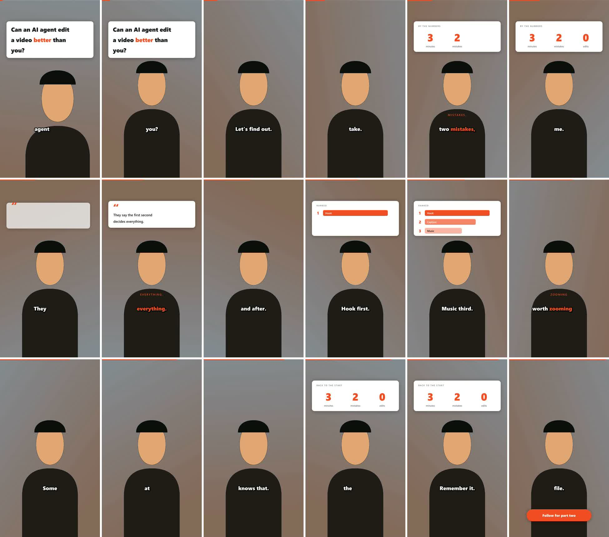

HOOK
Can an agent out-edit you?
Hook title
The first sentence builds word by word while the shot eases in.
trigger: sentence 1
Open skill file for AI agents · MIT
One SKILL.md and one Python script. Claude, Codex, Gemini, or a small local model reads it, asks how hard you want the edit, then cuts pauses, writes captions word by word, animates cards, grades color, keys green screens, mixes music, and checks its own work.
npx skills add nayrbryanGaming/splicecraft
One number
The agent asks for a level before it touches the file. Drag the slider to see exactly what changes. These are the same formulas the script uses.
Seven steps
The model does not guess at pixels. It follows numbered steps, runs one script, reads the result, and fixes what the checks flag. That is why a cheap model and an expensive one land in the same place.
ffmpeg with libass, Python 3.9+, and either a Groq key or faster-whisper.
ffmpeg -version python --version
Level 1–100, look, shape, music, green screen, brand colors, language, call to action. "Defaults" is a valid answer.
1. Edit level [60] 2. Look [studio] 3. Shape [9:16] ...
Whisper large-v3 returns a timestamp for every word. The agent reads it and fixes spelling of names.
$SC transcribe take.mp4 -o work/words.json
Each sentence gets a treatment or, on purpose, nothing. Output is a readable JSON edit list the agent can adjust.
$SC plan work/words.json --level 85 level 85 (Showrunner): 9 cards, 16 zooms, cut 6.5s -> 101.1s
One ffmpeg graph: cuts, key, grade, zooms, glass blur, ASS graphics, voice chain, music ducking, loudness.
$SC render take.mp4 work/edl.json \ -o work/edited.mp4 --key green
Nine pass/fail gates plus a contact sheet the agent looks at. Up to three fix rounds.
$SC qa work/edited.mp4 --edl work/edl.json QA PASSED
File path, what changed, the QA table, the contact sheet, the defaults it picked, and anything it could not do.
edited.mp4 · 9/9 gates · sheet.jpg
Beat library
Triggers come from what the speaker says, so a graphic lands on the word that earns it. Hover a card to play it.
The first sentence builds word by word while the shot eases in.
trigger: sentence 1
Counts up, labels itself with the next word, and merges numbers said close together.
trigger: 3 · 100% · two · seratus
A row per ordinal, bars shorter and lighter down the list.
trigger: first · second · third
A one to three word sentence goes huge, with a punch-in and a warm color pulse.
trigger: short sentence
Two panels and a badge that snaps in with a whoosh.
trigger: before and after
Typewriter reveal. "Here's a quote." hands off to the next sentence.
trigger: they say · quote
Cards blur the real footage behind them instead of covering it.
--style glass
Once, near the end, only when the speaker asks for it.
trigger: follow · subscribe · comment
The default. At least a third of the runtime stays clean so the other beats hit.
trigger: everything else
Six looks
Each look sets card colors, caption size, a color grade, and the music tempo. Brand colors override any of it with a small JSON file.
Research
Both are viral "which AI edits better" shorts. We logged every beat against the transcript, then listed what hurts viewers on a phone. The footage is not redistributed; the findings are in the repo.
Study 1 · 107.6 s · 60 fps
references/baseline-teardown.md
Study 2 · 26 s · 30 fps
references/design-secrets-glass.md
Install
Pick your tool. Every path ends with the same file being read and the same script being run.
npx skills add nayrbryanGaming/splicecraft # then, inside Claude Code Use the splicecraft skill. Edit ./raw/take1.mp4. Ask me the intake questions first.
git clone https://github.com/nayrbryanGaming/splicecraft .splicecraft echo "When asked to edit a video, follow .splicecraft/skills/splicecraft/SKILL.md exactly." >> AGENTS.md # prompt Read .splicecraft/skills/splicecraft/SKILL.md, then edit ./raw/take1.mp4 step by step.
git clone https://github.com/nayrbryanGaming/splicecraft .splicecraft cat >> GEMINI.md <<'EOF' For any video editing request, read .splicecraft/skills/splicecraft/SKILL.md and follow the steps in order. Do not skip Step 6 (QA). Do not invent flags. EOF
# one step per message keeps small models on track 1. Run SKILL.md Step 0 and paste the output. 2. Ask me the Step 1 questions. 3. Run Steps 2 and 3. Show the segments. 4. Run Step 4 with --level 60 --style studio. Paste the card list. 5. Run Step 5. 6. Run Step 6 and paste the QA table.
git clone https://github.com/nayrbryanGaming/splicecraft export GROQ_API_KEY=... # or: pip install faster-whisper python splicecraft/skills/splicecraft/scripts/splicecraft.py auto take.mp4 \ -d work --level 60 --style studio --size 1080x1920
Proof
A synthetic green-screen presenter with a text-to-speech voice, so every pixel and sound here is license-free. Level 85, studio look, chroma key on.

Questions
No. ffmpeg and Python's standard library. Transcription uses Groq's free tier or runs offline with faster-whisper on a CPU.
Much less than you would expect. Beat detection, timing, layout, and audio are fixed in code. The model mostly asks questions, runs commands, and proofreads the transcript.
Not by itself. Background removal and text behind the speaker need a segmentation model. The docs explain how to plug one in.
A chord bed and soft beat generated by ffmpeg at render time, or a file you own. The skill tells agents never to download songs.
Anything Whisper transcribes. Trigger words ship in English and Indonesian, and non-Latin scripts render with the right font.